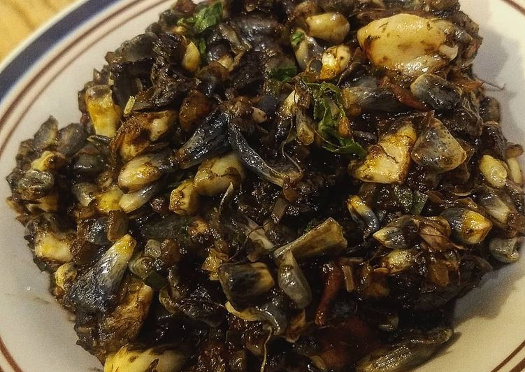

El huitlacoche es un hongo comestible que crece de forma natural en las mazorcas de maíz. Es considerado un ingrediente tradicional de la gastronomía mexicana por su sabor terroso y ligeramente ahumado, además de su textura suave. Se utiliza en diversos platillos, especialmente en quesadillas, tacos y guisos, y es apreciado por su valor nutritivo y su característico color oscuro.